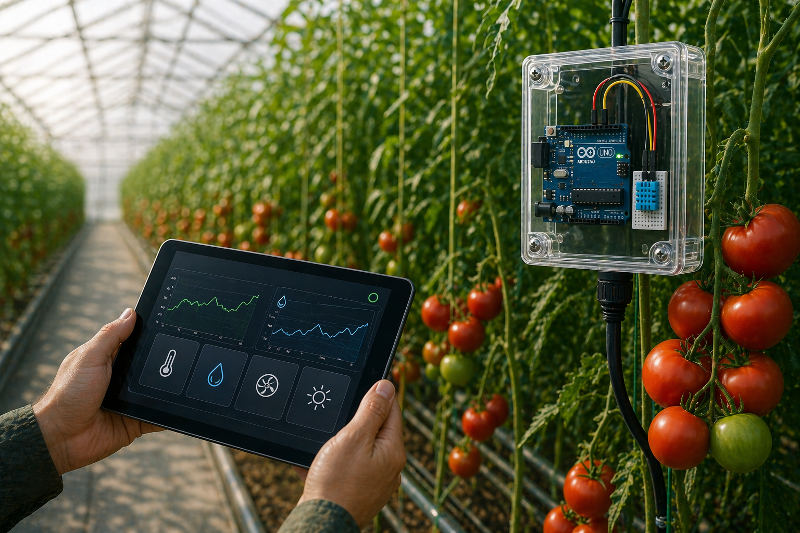

Monitoramento de temperatura e umidade em tempo real para estufas de tomate.
Conheça o produto
A SmartGreen Sensor nasceu para resolver um desafio real: pequenas variações de temperatura dentro de uma estufa podem comprometer semanas de cultivo.
Nosso foco está em oferecer monitoramento acessível e preciso para produtores de tomate que precisam agir antes que o prejuízo aconteça — com tecnologia, precisão e segurança para o cultivo agrícola.
Três etapas simples, controle total da sua estufa.
O dispositivo IoT é instalado dentro da estufa e começa a coletar temperatura e umidade continuamente.
As leituras são enviadas automaticamente para a plataforma online, acessível por qualquer computador.
Quando a temperatura sai da faixa ideal, o sistema dispara um alerta antes que a planta sofra dano.

Um sistema IoT com sensores de temperatura e umidade instalados na estufa. Os dados são enviados em tempo real para uma plataforma online com histórico e alertas automáticos.

Transformar o cultivo em estufas com tecnologia acessível — oferecendo mais controle, reduzindo perdas e aumentando a produtividade.
Acreditamos que dados precisos e acompanhamento contínuo mudam o resultado de uma safra, levando mais inovação e sustentabilidade aos produtores.